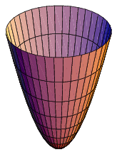

Paraboloid

Paraboloid, an open surface generated by rotating a parabola (q.v.) about its axis. If the axis
of
the surface is the z axis and the vertex is at the origin, the intersections of the surface with
planes parallel to the xz and yz planes are parabolas.
The surface of revolution of the parabola which is the shape used in the
reflectors of automobile headlights
Its equation is given by -
\[z\space =\space b(x^{2}+y^{2})\]
The paraboloid which has radius a at height h is then given parametrically by
\[x\space =\space a\sqrt{\frac{u}{h}}cosv\]
\[y\space =\space a\sqrt{\frac{u}{h}}sinv\]
\[z\space =\space u\]
A circular or elliptical paraboloid surface may be used as a parabolic
reflector.
Applications of this property are used in automobile headlights, solar furnaces, radar, and
radio
relay
stations.
Properties and Application of Paraboloid
Elliptic Paraboloid
In a suitable Cartesian coordinate system, an elliptic paraboloid has the
equation
\[
z = \frac{x^{2}}{a^{2}} + \frac{y^{2}}{b^{2}}
\]
If a = b, an elliptic paraboloid is a circular paraboloid or paraboloid of revolution. It is a
surface of
revolution
obtained by revolving a parabola around its axis.
Obviously, a circular paraboloid contains circles. This is also true in the general case (see
Circular section).
From the point of view of projective geometry, an elliptic paraboloid is an ellipsoid that is
tangent to the
plane
at infinity.
Plane sections
The plane sections of an elliptic paraboloid can be:
→ a parabola, if the plane is parallel to the axis,
→ a point, if the plane is a tangent plane.
→ an ellipse or empty, otherwise.
Parabolic reflector
On the axis of a circular paraboloid, there is a point called the focus (or
focal
point), such that, if the paraboloid is a mirror, light (or other waves) from a point source at
the focus is
reflected into a parallel beam, parallel to the axis of the paraboloid. This also works the
other way around: a
parallel beam of light that is parallel to the axis of the paraboloid is concentrated at the
focal point. For a
proof, see Parabola § Proof of the reflective property.
Therefore, the shape of a circular paraboloid is widely used in astronomy for parabolic
reflectors and parabolic
antennas.
The surface of a rotating liquid is also a circular paraboloid. This is used in liquid-mirror
telescopes and in
making solid telescope mirrors (see rotating furnace).
Hyperbolic paraboloid
The hyperbolic paraboloid is a doubly ruled surface: it contains two families
of
mutually skew lines. The lines in each family are parallel to a common plane, but not to each
other. Hence the
hyperbolic paraboloid is a conoid.
These properties characterize hyperbolic paraboloids and are used in one of the oldest
definitions of hyperbolic
paraboloids: a hyperbolic paraboloid is a surface that may be generated by a moving line that is
parallel to a
fixed
plane and crosses two fixed skew lines.
This property makes it simple to manufacture a hyperbolic paraboloid from a variety of materials
and for a
variety
of purposes, from concrete roofs to snack foods. In particular, Pringles fried snacks resemble a
truncated
hyperbolic paraboloid.
A hyperbolic paraboloid is a saddle surface, as its Gauss curvature is negative at every point.
Therefore,
although
it is a ruled surface, it is not developable.
From the point of view of projective geometry, a hyperbolic paraboloid is one-sheet hyperboloid
that is tangent
to
the plane at infinity.
A hyperbolic paraboloid of equation \( z = axy \) or \( z =
\frac{a}{2}(x^{2} - y^{2}) \)
(this is the same up to a
rotation of axes)
may
be called a rectangular hyperbolic paraboloid, by analogy with rectangular hyperbolas.
Properties and Application of Hyperbolic Paraboloid
Plane sections
A plane section of a hyperbolic paraboloid with equation
\( z = \frac{x^{2}}{a^{2}} - \frac{y^{2}}{b^{2}} \)
can be
\( bx \pm ay + b = 0 \)
a line, if the plane is parallel to the z-axis, and has an equation of the form,
a parabola, if the plane is parallel to the z-axis, and the section is not a line,
a pair of intersecting lines, if the plane is a tangent plane,
a hyperbola, otherwise.
Examples in architecture
Saddle roofs are often hyperbolic paraboloids as they are easily constructed
from
straight sections of material. Some examples:
St. Mary's Cathedral, Tokyo, Japan (1964)
Cathedral of Saint Mary of the Assumption, San Francisco, California, USA (1971)
Saddledome in Calgary, Alberta, Canada (1983)
L'Oceanogràfic in Valencia, Spain (2003)
London Velopark, England (2011)